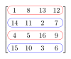

column
abstraction

Source: Wikipedia
Wikipedia Page (Something wrong with this association? Let us know.)
Wikidata Page (Something wrong with this association? Let us know.)
Occurs in:
- atmosphere_air_column_acetic-acid__mass-per-area_density
- atmosphere_air_column_acetonitrile__mass-per-area_density
- atmosphere_air_column_aerosol~dry_ammonium__mass-per-area_density
- atmosphere_air_column_alkanes__mass-per-area_density
- atmosphere_air_column_alkenes__mass-per-area_density
- atmosphere_air_column_alpha-hch__mass-per-area_density
- atmosphere_air_column_alpha-pinene__mass-per-area_density
- atmosphere_air_column_ammonia__mass-per-area_density
- atmosphere_air_column_clox-as-chlorine__mass-per-area_density
- atmosphere_air_column_hox-as-hydrogen__mass-per-area_density
- atmosphere_air_column_nox-as-nitrogen__mass-per-area_density
- atmosphere_air_column_water~vapor__leq_depth
- atmosphere_air_column_water~vapor__mass-per-area_density
- model_grid_column__count
- model_grid_column__count
- model_grid_cell_edge_along-column__length